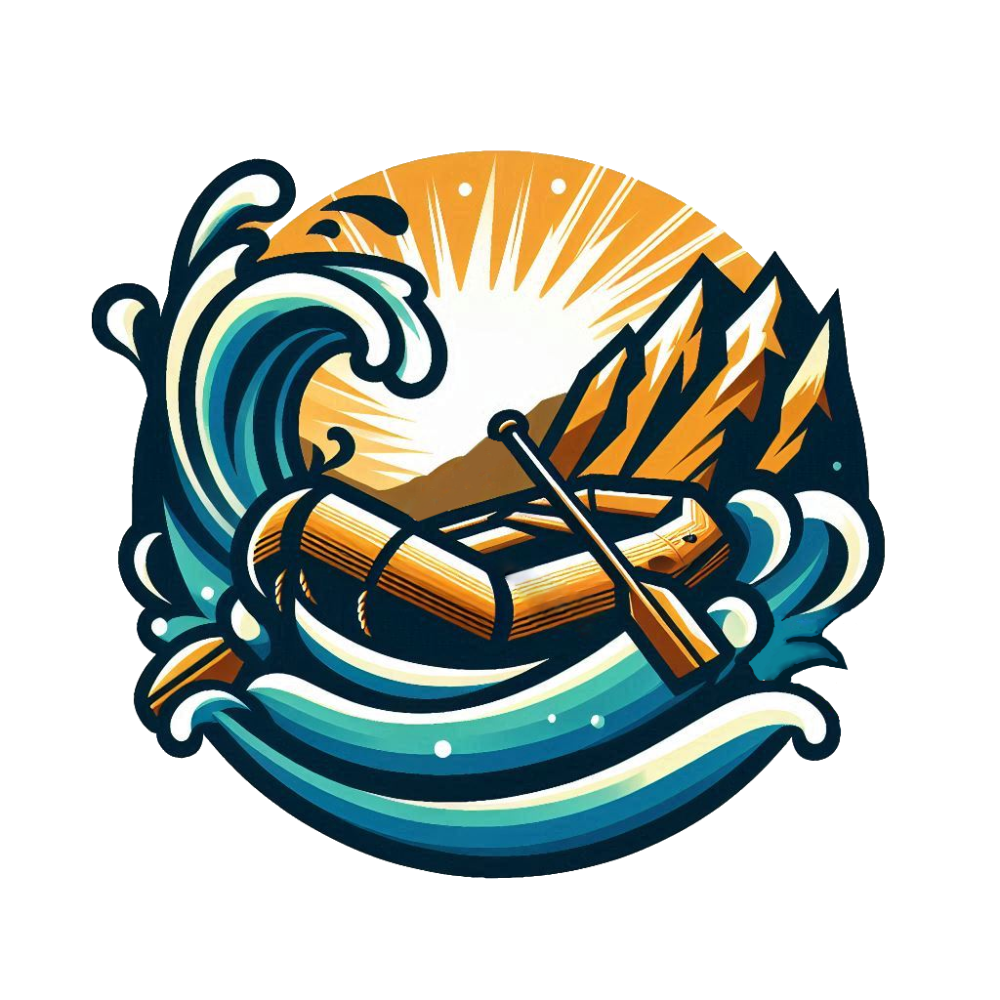

Overview
Purpose
The purpose of developing the website will be to allow potential customers a place to find more information about the company; the site should simultaneously address any questions the customer may have as well as making the customer feel safe in our hands, given the nature of the activity. The site should also include proper methods of communication so that they may get in touch should it be apporpriate. It should also look professional (and not an eyesore) to further increase the potential customer's trust in the business and so as to not drive them from the page (often times, a frustrating or unsightly webpage will cause users to want to leave the page rather than stay).
Audience
Typically, the demographic that would be interested in the product would be young adults (being roughly 20-35 years of age) and families with children above the age of about 8. Naturally, white water rafting tends to attract people that may be seeking some form of thrill, hence the appeal to young adults. For these customers a more intense section of the river should be chosen. Often times, families may want an experience that builds stronger bonds. If the family comprises of younger children or the members are generally inexperienced, a simpler section should be chosen.
The audience should be expected to typically access the site via desktop or laptop computers, but should be mobile-friendly in the event that it is accessed in that way.
Branding
Website Logo [WIP]
Style Guide
Color Palette
Palette URL:
https://coolors.co/de8c36-292d39-f7f7f2-2f745f-4c9480| Primary | Secondary | Neutral | Accent 1 | Accent 2 |
|---|---|---|---|---|
| [#4c9480] | [#2f745f] | [#f7f7f2] | [#de8c36] | [#292d39] |
Typography
Heading Font: Bebas Neue [undecided]
Paragraph Font: Bitter
Normal paragraph example
The best Whitewater Rafting in Colorado, White Water Rafting Company offers rafting on the Colorado and Roaring Fork Rivers in Glenwood Springs. Since 1974, we have been family owned and operated, rafting the Shoshone section of Glenwood Canyon and beyond.
Colored paragraph example
Trips vary from mild and great for families, to trips exclusively for physically fit and experienced rafters. No matter what type of river adventures you are seeking, White Water Rafting Company can make it happen for you.
Navigation
Site Map
Wireframes
Home